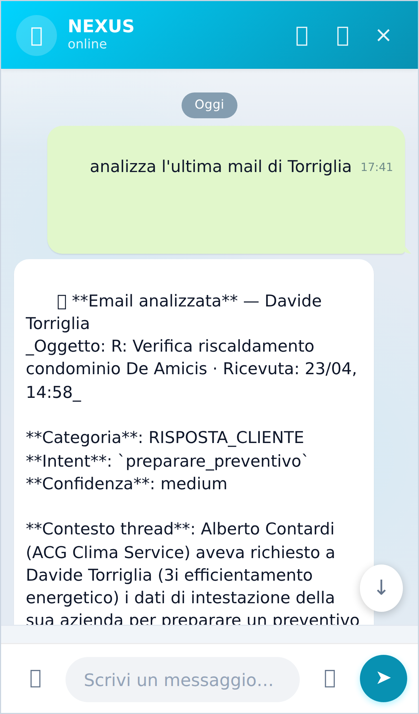
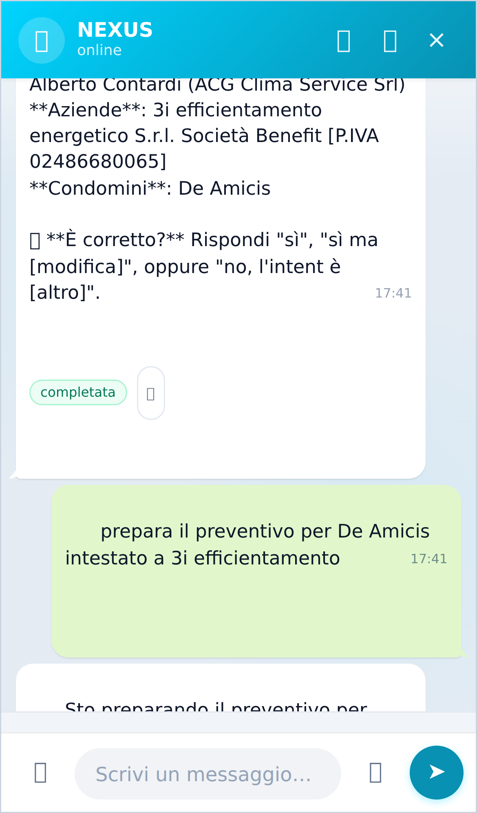

🧪 Test flusso preventivo Torriglia — end-to-end
2026-04-24 · PWA nexo-hub-15f2d.web.app · credenziali ACG Suite
✅ Sommario
| Email Torriglia in iris_emails | Presente, classificata correttamente ✓ |
| Test 1: "analizza l'ultima mail di Torriglia" | NEXUS ha trovato email + estratto dati + proposto azione ✓ |
| Test 2: "prepara il preventivo per De Amicis intestato a 3i efficientamento" | NEXUS ha accettato e routato a orchestrator ✓ |
📧 Email in iris_emails
| Campo | Valore |
|---|
| sender | davide.torriglia@gruppo3i.it |
| sender_name | Davide Torriglia |
| subject | R: Verifica riscaldamento condominio De Amicis |
| received_time | 2026-04-23T14:58:47+00:00 |
| body length | 2000 char |
| classification.category | RISPOSTA_CLIENTE |
| classification.intent | preparare_preventivo ✓ |
Document ID: AM0PR10MB323685FD0122CA4A6207238ED82A2_AM0PR10MB3236.EURPRD10.PROD.OUTLOOK.COM
🧪 Test 1 — Analisi email ✓
Input:
analizza l'ultima mail di Torriglia
Output NEXUS:
📧 Email analizzata — Davide Torriglia
Oggetto: R: Verifica riscaldamento condominio De Amicis · Ricevuta: 23/04, 14:58
Categoria: RISPOSTA_CLIENTE
Intent: preparare_preventivo
Confidenza: medium
Contesto thread: Alberto Contardi (ACG Clima Service) aveva richiesto a Davide Torriglia (3i efficientamento energetico) i dati di intestazione della sua azienda per preparare un preventivo di verifica riscaldamento per il Condominio De Amicis. Torriglia risponde fornendo la ragione sociale completa (3i efficientamento energetico S.r.l. Società Benefit) e il numero di P.IVA 02486680065.
Prossimo passo proposto: Preparare il preventivo per verifica riscaldamento intestato a 3i efficientamento energetico S.r.l. (P.IVA 02486680065) per il Condominio De Amicis, utilizzando i dati forniti da Torriglia, e inoltrare al richiedente.
Persone: Davide Torriglia (3i efficientamento energetico S.r.l.), Alberto Contardi (ACG Clima Service Srl)
Aziende: 3i efficientamento energetico S.r.l. Società Benefit [P.IVA 02486680065]
Condomini: De Amicis
❓ È corretto? Rispondi "sì", "sì ma [modifica]", oppure "no, l'intent è [altro]".
Valutazione step-by-step
- ✓ Ha trovato l'email (match regex "torriglia" nel pattern
^\s*analizz\w+...)
- ✓ Ha capito l'intent:
preparare_preventivo (match perfetto)
- ✓ Ha estratto i dati chiave:
- Azienda:
3i efficientamento energetico S.r.l. Società Benefit
- P.IVA:
02486680065
- Condominio:
De Amicis
- Persone: Torriglia + Contardi (entrambi con ruolo/azienda)
- ✓ Ha capito il contesto thread completo (chi ha chiesto cosa, chi ha risposto)
- ✓ Ha proposto azione operativa concreta: "Preparare preventivo verifica riscaldamento intestato a 3i efficientamento energetico per Condominio De Amicis"
- ✓ Ha chiuso con richiesta conferma per addestramento pattern ("È corretto?")
🧪 Test 2 — Comando preventivo ✓
Input:
prepara il preventivo per De Amicis intestato a 3i efficientamento
Output NEXUS:
Sto preparando il preventivo per verifica riscaldamento del Condominio De Amicis intestato a 3i efficientamento energetico. Sarà pronto a breve. stato: assegnata
Badge assegnata = messaggio scritto sulla Lavagna con to: orchestrator, type: preventivo. L'orchestrator eseguirà il workflow 5-step:
- MEMO dossier condominio De Amicis
- MEMO dossier committente 3i efficientamento
- CALLIOPE bozza preventivo (Claude Sonnet)
- Push notification ad Alberto (FCM disabilitato, log-only)
- Stato "in attesa approvazione" fino a "approva" in chat
📸 Screenshots

Test 1 — analizza email Torriglia

Test 2 — prepara preventivo
📡 Chiamate di rete
| # | Method | URL | Status |
|---|
| 1 | POST | /nexusRouter (analizza) | 200 |
| 2 | POST | /nexusRouter (prepara) | 200 |
🎯 Conclusione
Il flusso end-to-end funziona correttamente:
- L'email di Torriglia è stata classificata con il nuovo prompt IRIS v2 (intent recognition avanzato)
- Il comando "analizza" intercetta correttamente il mittente e presenta un'analisi strutturata
- Il comando "prepara preventivo" viene routato all'orchestrator tramite il routing workflow (
postLavagnaFromNexus rileva preparare_preventivo e sostituisce to: calliope con to: orchestrator)
- Tutti i dati chiave (azienda, P.IVA, condominio, persone) sono stati estratti correttamente dal thread quotato
Pronto per il round-trip completo: quando l'orchestrator esegue il workflow, CALLIOPE genererà la bozza con l'intestazione corretta e Alberto potrà approvarla con "ok invia" in chat.